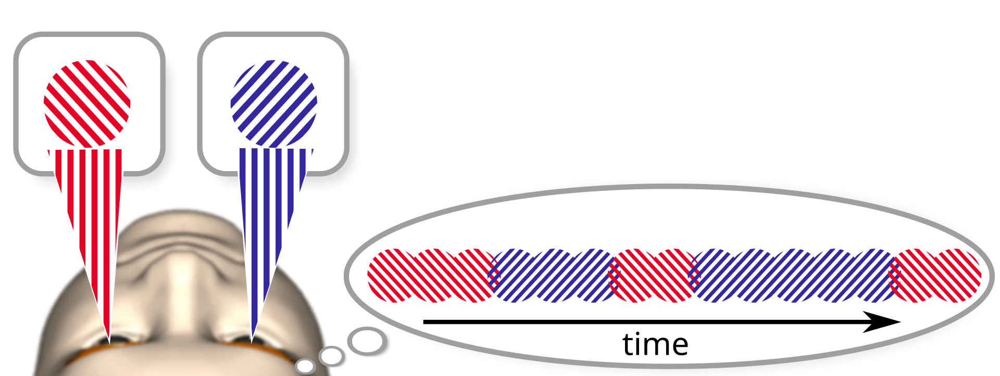
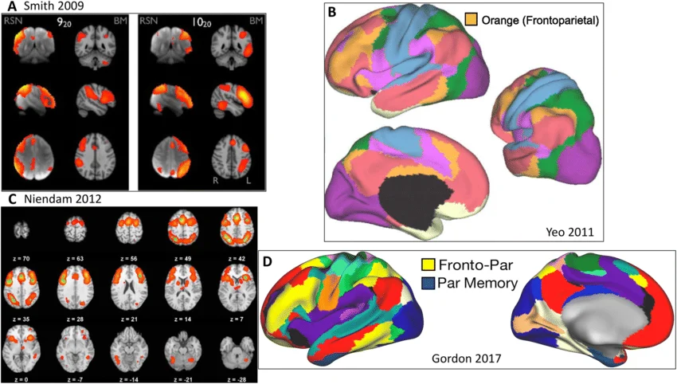

The problem with “no-report”
In 2014, Fräßle and colleagues ran a version of a classic experiment with one change. Participants watching binocular rivalry (two different images shown one to each eye, with perception flipping unpredictably between them) normally signal each flip with a button press. Fräßle’s team swapped the button for something involuntary, optokinetic nystagmus, the reflexive eye movement that naturally tracks whichever image is dominant. Same rivalry, same brain, same perceptual flips. The only thing that changed was whether reporting the flip required a deliberate decision.

Frontal cortex activity, long treated as a hallmark of conscious perceptual switching, dropped substantially the moment the button press was removed. The conclusion drawn from this, reasonably, was that a meaningful share of the “neural correlates of consciousness” researchers had been mapping for years were actually correlates of the act of reporting an experience, not the experience itself.
This is a possibility Ned Block had named nearly two decades earlier in his distinction between phenomenal consciousness (what an experience is like) and access consciousness (whether that experience is available for report, reasoning, and action). If a paradigm only ever measures access, entangled with phenomenal content, it can’t cleanly tell you which one produced the brain activity you’re looking at.
The field’s response was the no-report paradigm. Tsuchiya, Wilke, Fräßle, and Lamme formalised this into a research programme in 2015. Within a decade, “no-report” had become a single label applied to wildly different methods — optokinetic tracking, pupillometry, single-unit recordings in animals — as though removing a button press was sufficient, on its own, to remove every confound the label implies.
What the label actually hides
The unexamined assumption behind the binary is that not requiring a deliberate motor response is both necessary and sufficient for a paradigm to have controlled for the report confound. It’s neither. A paradigm can eliminate the button press while still demanding sustained attention, indirect physiological proxies, or long delays between experience and measurement. And each of those, independently, can generate the same frontal activity the field was trying to rule out in the first place.
Fräßle’s own result makes the point precisely: removing the button press reduced frontal activity, but the optokinetic tracking task still required participants to sustain active spatial attention on the display for the reflex to lock on reliably.
What dropped out was the motor-planning component.
What almost certainly stayed was the attentional one, and attentional engagement recruits frontoparietal circuitry through a completely different, non-report-related route.
Four axes
This paper replaces the binary with a four-dimensional space. Every paradigm gets scored as a position along each of four independently variable axes:
Deliberateness — how much the response depends on voluntary, goal-directed motor planning, as opposed to an automatic reflex proceeding without intent. High end: a button press or spoken answer chosen by the participant. Low end: the pupillary light reflex, or optokinetic nystagmus driven by brainstem circuitry with no volitional component at all.
Directness — how structurally close the measured signal sits to the actual circuits generating the experience of interest, as opposed to a downstream physiological proxy several steps removed. High end: intracranial recordings taken directly from the relevant cortex. Low end: pupil diameter, which reflects perceptual and cognitive events only after passing through the locus coeruleus, the superior colliculus, and the Edinger-Westphal nucleus.
Attentional load — how much sustained central-executive and working-memory resource the task demands throughout the trial, independent of whether any response is required at all. High end: rapid dual-task paradigms demanding continuous monitoring of competing streams. Low end: passive exposure to an unprompted stimulus with no instruction to track or evaluate it.
Temporal distance — how far measurement lags behind the experience it’s meant to index, from strictly concurrent recording to fully retrospective report. High end (concurrent): millisecond-resolution electrophysiology synchronised to stimulus onset. Low end (retrospective): a confidence rating collected seconds after the stimulus has already ended, by which point memory consolidation has had time to intrude.
The four axes were chosen because each can independently generate frontoparietal activity through a mechanism that has nothing to do with phenomenal experience, and because, critically, they don’t move together. A paradigm can be low on deliberateness while remaining high on attentional load, exactly as Fräßle’s optokinetic condition was. That independence is the whole reason a single “no-report” label can’t capture what’s actually happening.
What the map actually looks like
Applied to eight paradigm families in current use -standard binocular rivalry, optokinetic-tracked rivalry, continuous flash suppression, the attentional blink, backward masking, passive pupillometry, human intracranial recording, and single-unit recording in non-human primates — the result is a scatter, with no paradigm sitting anywhere near the confound-free origin the “no-report” label implies.
A few pairings.
Standard binocular rivalry and its optokinetic-tracked counterpart are routinely treated as a clean report/no-report contrast, but they share nearly identical attentional load and temporal proximity; the only axis they actually differ on is deliberateness. The famous Fräßle finding, in other words, is really a demonstration that low-deliberateness paradigms produce different frontal profiles than high-deliberateness ones, not that no-report paradigms in general are confound-free.
Passive pupillometry scores about as low as possible on deliberateness, but its directness score is poor: the pupillary pathway runs through several synaptic relays before reaching anything resembling the thalamocortical circuits most theories of consciousness actually care about, and the pupil’s sluggish physiology adds a temporal lag that makes it a poor fit for capturing fast, transient neural events.
Single-unit recording in non-human primates scores near the opposite extreme. Very low deliberateness, very high directness, introducing a confound, months of reward-driven behavioural training reshape the very prefrontal-posterior connectivity the recordings are meant to characterise.
Human intracranial recording shares that same low-deliberateness, high-directness profile, but its confound is different again. The tissue being recorded from belongs to patients with medically refractory epilepsy, brains already structurally reorganized by years of seizure activity, raising a real question about how far conclusions generalise to typical brains at all.
Running the taxonomy against Cogitate
The clearest test of whether this framework does real work is retrospective. Score it against the Cogitate Consortium’s own pre-registered design — the same adversarial test of Integrated Information Theory (IIT) and Global Neuronal Workspace Theory (GNWT) whose two unexplained anomalies motivated the companion paper on this site.
Scored across all four axes, Cogitate’s paradigm carries more residual demand than its “theory-neutral, adversarial” framing implies:
Deliberateness lands moderate-to-high. Even in conditions without a button press on every trial, the active categorisation task required participants to stay continuously ready to register task-relevant responses.
Attentional load lands high. Categorising a rapid stream of stimuli across four distinct semantic categories, sustained across a full multi-trial protocol, recruits exactly the kind of top-down frontoparietal attentional control that structurally overlaps with the circuitry GNWT identifies as the substrate of conscious access.
Directness lands moderate. fMRI and MEG measure hemodynamic and electromagnetic proxies of neural activity, not the activity itself, meaning the anomalous front-to-back connectivity pattern central to both theories’ unresolved third prediction was captured through an inferential step that admits more than one physical interpretation.
Temporal distance lands near-concurrent, which is a genuine strength of the design, but one strong axis doesn’t offset the demand load carried by the other three.
What this taxonomy adds is a formal demand profile, applied before data collection, would have flagged exactly these three residual-demand properties as live threats to interpretation, instead of leaving the field to discover them only after a landmark result had already gone unexplained in public.
The stakes are specific to this dispute. IIT and GNWT disagree, at bottom, about whether prefrontal cortex is constitutive of consciousness or merely supportive of reporting it, which means any paradigm that can’t cleanly separate report-related frontal engagement from consciousness-related frontal engagement is, by construction, poorly positioned to adjudicate between exactly these two theories.

The proposed standard
The fix is a Pre-registered Demand Profile (PDP). a mandatory, four-axis disclosure submitted alongside a study’s pre-registration, specifying exactly where a paradigm sits before a single participant is run.
Three worked examples from the paper show what this looks like in practice. An
OKN-tracked rivalry study would need to disclose that it controls the deliberateness confound but not the attentional-load one,meaning any frontal activity in its results still can’t be cleanly attributed to conscious content alone.
A single-unit NHP study would need to disclose its training-induced connectivity changes and the open question of primate-to-human generalizability before its data gets pooled with human studies as though directly comparable.
A backward-masking study would need to disclose its retrospective judgment window, so its findings aren’t cited as concurrent neural evidence when they aren’t.
None of this eliminates the confounds a given paradigm carries. What it does is make them visible, comparable, and falsifiable in advance, so two theories can commit, before data collection, to what a given demand profile would and wouldn’t mean for their architecture.
Conclusion
The four axes were chosen because each independently explains frontal activity that has nothing to do with phenomenal content, but a fifth dimension, metacognitive proximity (how much a paradigm recruits implicit self-monitoring even without an explicit confidence judgment), is a plausible next addition the current version doesn’t include. The independence of the four axes is theoretically motivated by concrete counterexamples, not yet empirically verified at scale.
ABSTRACT
Over the past decade, the no-report paradigm has become consciousness science’s primary methodological response to the report confound, the systematic entanglement of phenomenal experience with the cognitive demands of reporting it. The field has adopted the no-report label, however, as though it names a discrete category rather than a position on a continuum. Optokinetic nystagmus tracking, passive pupillometry, binocular rivalry, and single-unit recordings in non-human primates are each described as no-report methodologies despite differing substantially in how much deliberate cognitive engagement they require, how indirectly they index perceptual state, and how many of the confounds the label was coined to eliminate they actually control for. This inconsistency carries a concrete inferential cost: results from paradigms with structurally dissimilar demand profiles are being pooled in meta-analyses, cited as mutual replications, and used to adjudicate between competing theories of consciousness as though they Ire methodologically equivalent when they are not. This paper proposes a formal dimensional taxonomy of report demands in consciousness research, classifying paradigms along four independent axes: (1) The deliberateness of the required response. (2) The directness with which the response indexes phenomenal state. (3) The degree of sustained attentional engagement the task requires, (4) The temporal relationship between experience and measurement. Applying this taxonomy to the major paradigm families currently in use (binocular rivalry, attentional blink, backward masking, continuous flash suppression, optokinetic nystagmus, pupillometry, intracranial recording, and single-unit recording) I show that the resulting classification does not sort into report versus no-report but into a multidimensional space in which no existing paradigm occupies the fully confound-free position the label implies. I propose a Pre-registered Demand Profile standard that would require researchers to specify a paradigm’s position in this four-dimensional space before data collection, and argue that theoretical conclusions in consciousness science should be indexed not to report or no-report as binary labels but to specific, quantifiable demand profiles. Adopting this standard would materially strengthen the inferential basis of future adversarial collaborations and, more broadly, of any empirical program attempting to isolate the neural correlates of phenomenal experience from the cognitive machinery recruited to report it.
Notes
- Block, N. “On a confusion about a function of consciousness.” Behavioral and Brain Sciences, 1995.
- Tsuchiya, N., Wilke, M., Fräßle, S., Lamme, V.A.F. “No-report paradigms: extracting the true neural correlates of consciousness.” Trends in Cognitive Sciences, 2015.
- Fräßle, S., Sommer, J., Jansen, A., Naber, M., Einhäuser, W. “Binocular rivalry: frontal activity relates to introspection and action but not to perception.” Journal of Neuroscience, 2014.
- Lamme, V.A.F. “Towards a true neural stance on consciousness.” Trends in Cognitive Sciences, 2006.
- Cogitate Consortium et al. “Adversarial testing of global neuronal workspace and integrated information theories of consciousness.” Nature, 2025.
- Tononi, G. “An information integration theory of consciousness.” BMC Neuroscience, 2004.
- Dehaene, S., Changeux, J.P. “Experimental and theoretical approaches to conscious processing.” Neuron, 2011.
- Mellers, B., Hertwig, R., Kahneman, D. “Do frequency representations eliminate conceptual biases in judgment under uncertainty? An adversarial collaboration.” Psychological Science, 2001.